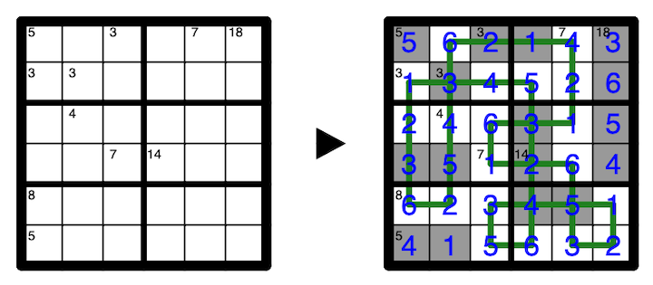

Shade some cells in the grid, then draw a loop that passes orthogonally from cell center to cell center through all unshaded cells. The loop may cross itself, but only on shaded cells. The loop must not turn on shaded cells.
If a clued cell is unshaded, the clue indicates the sum of all numbers on the contiguous unshaded segment of the loop that passes through the clued cell.
If a clued cell is shaded, the clue indicates the sum of all numbers in the orthogonally connected group of shaded cells the clued cell belongs to.
For all such groups (shaded and unshaded), numbers must not repeat.
A 1-6 example is provided:
